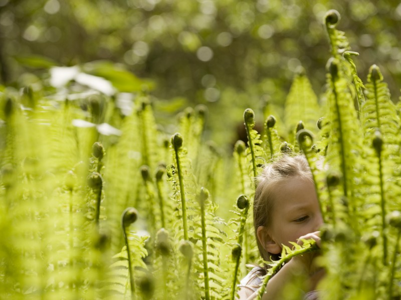

April 4, 2016
Cultivate Wonder

As we worry about “grown-up” concerns like climate change, let’s not forget to cultivate a wonder of the natural world in ourselves and in the next generation.
Little kids develop a connection with nature through frequent hands-on, positive experiences like constructing forts, searching for treasures or following streams. By elementary school they are ready for structured activities like gardening, volunteering, caring for animals and the basics of Ecology. Lots of ideas and resources here.
Children (and adults!) learn by example so your own excitement, more than your scientific knowledge, will ignite and sustain a love of nature in others. Could you volunteer to read Dr. Suess’ The Lorax at your public library? Or organize a group to transform your local playground from metal monkey bars into something interactive with bird feeders, log piles, vegetable gardens? A Scout troop or 4-H club could always use a hand from a thoughtful adult. Or instead of Happy Hour, invite a coworker for a walk in the park.
This is the fun part of environmental action: get out, explore, bring a friend, repeat. As the wise Lorax once said, “Unless someone like you cares an awful lot, nothing is going to get better. It’s not.”